ВЕДОМСТВЕННЫЕ СТРОИТЕЛЬНЫЕ НОРМЫ
ПРОЕКТИРОВАНИЕ
мелкозаглубленных фундаментов
малоэтажных сельских зданий
на пучинистых грунтах
ВСН 29-85
Минсельстрой
МИНИСТЕРСТВО СЕЛЬСКОГО ХОЗЯЙСТВА
Москва - 1985
Разработаны: Центральным научно-исследовательским, экспериментальным и проектным институтом по сельскому строительству (ЦНИИЭПсельстроем) Министерства сельского строительства СССР.
|
Директор |
Л.Н. Ануфриев |
|
Заведующий сектором оснований и фундаментов в сложных грунтовых условиях |
В.С. Сажин |
|
Старшие научные сотрудники |
А.Г. Бейрих |
|
В.В. Борщев |
|
|
Д.Я. Гинзбург |
|
|
А.Т. Мальцев |
Научно-исследовательским институтом оснований и подземных сооружений Госстроя СССР (НИИОСПом)
|
Директор |
Б.С. Федоров |
|
Заведующий лабораторией оснований и фундаментов на пучинистых грунтах |
В.О. Орлов |
Проектным институтом Саратовоблколхозпроект Росколхозстрой-объединения
|
Директор |
Б.Н. Лысункин |
|
Главный специалист |
В.Н. Краюшкин |
Внесены: ЦНИИЭПсельстроем Минсельстроя СССР, НИИОСПом Госстроя СССР
Подготовлены к утверждению: Главным техническим управлением Минсельстроя СССР
|
Начальник |
В.Я. Макарук |
Согласованы: Госстроем СССР
|
Заместитель председателя |
С.Л. Дворников |
Минсельхозом СССР
|
Заместитель министра |
И.П. Быстрюков |
Утверждены и введены в действие: приказом Министерства сельского строительства СССР № 44 от 14 февраля 1985 г.
СОДЕРЖАНИЕ
На территории СССР широко распространены пучинистые грунты. К ним относятся глины, суглинки, супеси , пески пылеватые и мелкие. При определенной влажности эти грунты, замерзая в зимний период, увеличиваются в объеме, что приводит к подъему слоев грунта в пределах глубины его промерзания. Находящиеся в таких грунтах фундаменты также подвергаются подъему, если действующие на них нагрузки не уравновешивают силы пучения. Поскольку деформации пучения грунта, как правило, неравномерны, происходит неравномерный подъем фундаментов, который со временем накапливается. В результате этого надфундаментные конструкции зданий и сооружений претерпевают недопустимые деформации и разрушаются. Деформациям, от пучения грунта особенно подвержены легкие сооружения, к числу которых откосится большинство малоэтажных сельских зданий.
В соответствии с нормами по проектированию оснований зданий и сооружений глубина заложения фундаментов в пучинистых грунтах должна приниматься не менее расчетной глубины промерзания. В этом случае подошва фундамента освобождается от воздействия нормальных сил пучения. Однако глубоко заложенные фундаменты имеют развитую боковую поверхность, по которой действуют касательные силы пучения. Эти силы превосходят нагрузки, передаваемые легкими зданиями на фундаменты, в результате чего фундаменты выпучиваются.
Таким образом, материалоемкие и дорогостоящие фундаменты, заложенные ниже глубины промерзания грунта, не обеспечивают надежную эксплуатацию малоэтажных зданий, построенных на пучинистых грунтах.
Одним из путей решения проблемы строительства на пучинистых грунтах малоэтажных зданий является использование мелкозаглубленных фундаментов. Такие фундаменты закладываются на глубине 0,2 - 0,5 м от поверхности грунта или непосредственно на поверхности (незаглубленные фундаменты). И, таким образом, на мелкозаглубленные фундаменты действует незначительные касательные силы пучения, а при незаглубленных фундаментах они равны нулю.
Как правило, под фундаментами устраиваются подушки толщиной 20 - 30 см из непучинистых материалов (песок гравелистый, крупный или средней крупности, мелкий щебень, котельный шлак и др.). Применением подушки достигается не только частичная замена пучинистого грунта на непучинистый, но и уменьшение неравномерных деформаций основания. Толщина подушек и глубина заложения фундаментов определяется расчетом.
Основной принцип конструирования мелкозаглубленных фундаментов зданий с несущими стенами на пучинистых грунтах заключается в том, что ленточные фундаменты всех стен здания объединяются в единую систему и образуют достаточно жесткую горизонтальную раму, перераспределяющую неравномерные деформации основания. При мелкозаглубленных столбчатых фундаментах рама формируется из фундаментных балок, которые жестко соединяются между собой на опорах.
Для обеспечения совместной работы фундаментных элементов последние жестко соединяются между собой.
Указанные конструктивные мероприятия выполняются при строительстве на среднепучинистых (при интенсивности пучения, большей 0,05) сильно - и чрезмернопучинистых грунтах. В остальных случаях, фундаментные элементы укладываются свободно, не соединяются между собой. Количественным показателем пучинистости грунта является интенсивность пучения, характеризующая пучение элементарного слоя грунта. Применение мелкозаглубленных фундаментов базируется на принципиально новом подходе к их проектированию, в основу которого заложен расчет оснований по деформациям пучения. При этом допускаются деформации основания (подъем, в том числе неравномерный), однако они должны быть меньше предельных, которые зависят от конструктивных особенностей зданий.
При расчете оснований по деформациям пучения учитываются пучинистые свойства грунта, передаваемое на него давление, жесткость фундамента и надфундаментных конструкций на изгиб. Надфундаментные конструкции рассматриваются не только как источник нагрузок на фундаменты, но и как активный элемент, участвующий в совместной работе фундамента с основанием. Чем больше жесткость конструкций на изгиб, тем меньше относительные деформации основания.
Передаваемое на грунт давление значительно (иногда в несколько раз) снижает подъем основания при пучении грунта. При подъеме мелкозаглубленных фундаментов действующие по их подошвам нормальные силы пучения резко уменьшаются.
Все конструкций мелкозаглубленных фундаментов и положения по их расчету, приведенные в настоящем документе, прошли проверку при проектировании и строительстве малоэтажных зданий различного назначения - домов усадебного типа, хозяйственных построек, производственных сельскохозяйственных зданий вспомогательного назначения, трансформаторных подстанций и др.
В настоящее время во многих областях Европейской части РСФСР, в районах с глубиной промерзания до 1,7 и, на мелкозаглубленных и незаглубленных фундаментах построено свыше 1500 одно- и двухэтажных зданий из разных материалов - кирпича, блоков, панелей, деревянных щитов. Систематические инструментальные наблюдения за зданиями в течение 3 - 6 лет свидетельствуют о надежной работе мелкозаглубленных фундаментов. Применение таких фундаментов вместо традиционных, закладываемых ниже глубины промерзания грунтов позволило сократить: расход бетона на 50 - 80 %, трудозатраты - на 40 - 70 %.
В настоящих нормах содержатся требования по конструированию, проектированию и устройству мелкозаглубленных фундаментов на пучинистых грунтах. Не случайно, поэтому, область применения таких фундаментов определена именно для пучинистых грунтов. Мелкозаглубленные фундаменты на пучинистых грунтах рекомендуется применять в массовом порядке при глубине промерзания до 1,7 м. При большей глубине промерзания пучинистых грунтов мелкозаглубленные фундаменты рекомендуется только для экспериментального строительства. Накопление опыта строительства объектов с мелкозаглубленными фундаментами в районах с большой глубиной промерзания позволит в дальнейшей расширить область применения их на пучинистых грунтах.
Хотя область применения мелкозаглубленных фундаментов в иных грунтовых условиях формально выходит за рамки настоящих норм, представляется целесообразным дать некоторые рекомендации по использованию таких фундаментов при строительстве малоэтажных зданий на наиболее распространенных на территории нашей страны грунтах.
В соответствии с главой СНиП 2.02.01-83 глубина заложения фундаментов на непучинистых грунтах не зависит от глубины их промерзания. Поэтому при строительстве малоэтажных зданий на непучинистых грунтах мелкозаглубленные фундаменты рекомендуются к массовому применению.
На основаниях, сложенных вечномерзлыми грунтами, мелкозаглубленные фундаменты могут быть использованы для экспериментального строительства. При этом должны быть предусмотрены мероприятия, направленные на предотвращение недопустимых деформаций оснований, вызванных оттаиванием вечномерзлых грунтов.
Применение мелкозаглубленных фундаментов на естественном основании в грунтовых условиях I типа по просадочности рекомендуется лишь в том случае, если передаваемое на грунт давление меньше начального просадочного давления. В остальных случаях применения таких фундаментов возможно лишь для экспериментального строительства при условии, что суммарные деформации оснований, вызванные просадкой и осадкой грунта, не превосходят предельных деформаций.
В грунтовых условиях II типа по просадочности применение мелкозаглубленных фундаментов на естественном основании не допускается.
Необходимо подчеркнуть, что поскольку основной причиной пучения грунтов является наличие в них воды, способной при промерзании переходить в лед, следует строго соблюдать требование о недопустимости водонасыщения грунта в основании мелкозаглубленных фундаментов в процессе строительства и при эксплуатации зданий. Следует предусматривать надежный отвод с площадки строительства атмосферных и производственных вод путем вертикальной планировки застраиваемой территории, устройства водоотводов и дренажа. При рытье траншей для фундаментов и инженерных коммуникаций земляные работы следует производить с минимальным объемом нарушения грунтов природного сложения. Не допускается скопление воды от повреждения временного трубопровода на площадке строительства. Вокруг зданий следует устраивать водонепроницаемые отмостки шириной не менее 1 м и уклоном не менее 0,03. Следует избегать устройства вводов трубопроводов канализации и водоснабжения с нагорной стороны здания. При эксплуатации зданий не допускается изменять условия, применительно к которым запроектированы мелкозаглубленные фундаменты.
|
Министерство сельского строительства СССР |
Ведомственные строительные нормы |
ВСН 29-85 |
|
(Минсельстрой СССР) |
Проектирование мелкозаглубленных фундаментов малоэтажных сельских зданий на пучинистых грунтах |
Минсельстрой СССР |
|
Вводятся впервые |
||
|
Внесены НИИ оснований и подземных сооружений Госстроя СССР |
Утверждены Министерством сельского строительства СССР 14 февраля 1985 г. |
Срок введения в
действие |
1.1. Настоящие ведомственные строительные нормы предназначены для проектирования мелкозаглубленных фундаментов одно- и двухэтажных сельских зданий (жилых, культурно-бытовых, производственных сельскохозяйственных основного и вспомогательного назначения), строящихся на пучинистых грунтах с глубиной промерзания не более 1,7 м. При этом должны соблюдаться требования, предусмотренные соответствующими общесоюзными нормативными документами.
Примечание. ВСН 29-85 могут быть использованы для проведения экспериментального строительства в районах с глубиной промерзания грунтов более 1,7 м.
1.2. При выборе площадок для строительства зданий с мелкозаглубленными фундаментами предпочтение следует отдавать участкам с однородными по составу грунтами как в плане, так и по глубине той части сезоннопромерзающего слоя, которая проектируется в качестве основания.
1.3. Растет оснований зданий, возводимых на пучинистых грунтах, следует производить по деформациям. Деформации основания, вызванные морозным пучением грунта под подошвой фундамента, не должны превосходить предельных деформаций, которые зависят от конструктивных особенностей зданий. При расчете оснований мелкозаглубленных фундаментов помимо настоящих норм необходимо соблюдать требования главы СНиП 2.02.01-83 по проектированию оснований зданий и сооружений.
1.4. При проектировании оснований и фундаментов на пучинистых грунтах необходимо предусматривать мероприятия (инженерно-мелиоративные, строительно-конструктивные, термохимические), направленные на уменьшение деформаций зданий и сооружений.
Выбор типа и конструкции фундамента, способа подготовки основания и других мероприятий по уменьшению неравномерных деформаций здания от морозного пучения должен решаться на основе технико-экономического анализа с учетом конкретных условий строительства.
2.1. По степени пучинистости грунты подразделяются на пять групп (табл. 1). Принадлежность пылевато-глинистого грунта к той или иной группе оценивается параметром Rf, определяемым по формуле
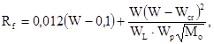
где W - расчетная предзимняя влажность в слое сезонного промерзания грунта, доли един., определяемая в соответствии с приложением 1;
Wp, WL - средневзвешенные значения (в пределах слоя сезонного промерзания грунта) влажностей, соответствующих границам раскатывания и текучести, доли един.;
Wcr - критическая влажность, доля един., определяемая по графику (рис. 1) при средневзвешенных значениях числа пластичности и границы текучести;
Мо - безразмерный коэффициент, численно равный при открытой, оголенной от снега поверхности промерзающего грунта абсолютному значению средней зимней температуры воздуха, определяемой в соответствии с главой СНиП по строительной климатологии и геофизике, а при отсутствии в ней данных для конкретного района строительства - по результатам наблюдений гидрометеорологической станции, находящейся в аналогичных условиях с районом строительства.
После вычисления по формуле (2.1) параметра Rf из табл. 1 определяется интенсивность пучения f, которая в дальнейшем используется при выборе конструкции фундамента и конструктивных мероприятий (п. 3.5).
2.2. Пучинистые свойства крупнообломочных грунтов и песков, содержащих пылевато-глинистые фракции, а также супесей с Ip < 0,02 определяются посредством показателя дисперсности Д. Эти грунты относятся к пучинистым при D ³ 1 (при 1 < D < 5 грунты слабопучинистые; при D > 5 - среднепучинистые).
Значение D определяется по формуле
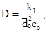
где k1 - коэффициент, равный 1,85×10-4 см2;
eo - коэффициент пористости;
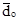
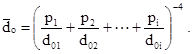
Здесь p1, p2, pi - содержание отдельных фракций грунта, доли ед.;
d01, d02, d0i - средний диаметр частиц отдельных фракций, см.
Таблица 1
Классификация пылевато-глинистых грунтов по степени пучинистости
|
Степень пучинистости грунта |
|||||
|
практически непучинистый f ≤ 0,01 |
слабопучинистый 0,01 < f £ 0,035 |
среднепучинистый 0,035 < f £ 0,07 |
сильнопучинистый 0,07 < f ≤ 0,12 |
чрезмерно пучинистый f > 0,12 |
|
|
Значение параметра Rf |
|||||
|
Супеси с 0,02 < Iр ≤ 0,07 |
0,0014 |
0,0014 - 0,0049 |
0,0049 - 0,0098 |
0,0098 - 0,0169 |
0,0169 |
|
Супеси пылеватые с 0,02 < Ip £ 0,07 |
0,0009 |
0,0009 - 0,003 |
0,003 - 0,006 |
0,006 - 0,0103 |
0,0103 |
|
Суглинки с 0,07 < Iр ≤ 0,17 |
0,001 |
0,001 - 0,0035 |
0,0035 - 0,0071 |
0,0071 - 0,0122 |
0,0122 |
|
Суглинки пылеватые с 0,07 < Iр £ 0,13 |
0,0008 |
0,0008 - 0,0027 |
0,0027 - 0,0054 |
0,0054 - 0,0093 |
0,0093 |
|
Суглинки пылеватые с 0,13 < Iр £ 0,17 |
0,0007 |
0,0007 - 0,0023 |
0,0023 - 0,0046 |
0,0046 - 0,0079 |
0,0079 |
|
Глины с Iр > 0,17 |
0,0012 |
0,0012 - 0,0043 |
0,0043 - 0,0086 |
0,0086 - 0,0147 |
0,0147 |
Примечание. Значение Rf рассчитывается по формуле (2.1), в которой плотность сухого грунта принята равной 1,5 т/м3; при иной плотности грунта расчетное значение Rf умножается на отношение rd/15, где rd - плотность сухого исследуемого грунта, т/м3.
Рис. 1. Значение критической влажности Wcr в зависимости от числа пластичности Ip и границы текучести WL
Средние диаметры частиц отдельных фракций определяется по их минимальным размерам, умноженным на коэффициент 1,4. За расчетный средний диаметр последней тонкой фракции принимается максимальный размер частиц, деленный на коэффициент 1,4.
2.3. Пучинистые грунты характеризуется деформацией пучения hf, представляющей высоту поднятия ненагруженной поверхности промерзшего грунта.
2.4. Неравномерность пучения грунта по площади характеризуется
относительной деформацией пучения 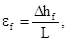
3.1. Для зданий с малонагруженными фундаментами следует применять такие конструктивные решения, которые направлены на снижение сил морозного пучения и деформация конструкций зданий, а также на приспособление зданий к неравномерным деформациям оснований.
3.2. Мелкозаглубленный (незаглубленный) фундамент конструктивно представляет собой бетонный или железобетонный элемент уложенный, как правило, на подушку или подсыпку из непучинистого материала (рис. 2), которые уменьшают перемещения фундамента как в период промерзания грунта, так и при его оттаивании.
3.3. В качестве материала для устройства подушки (подсыпки) может быть использован песок гравелистый, крупный или средней крупности, мелкий щебень, котельный шлак, а также - непучинистые грунты, имеющее показатель дисперсности D < 1.
В необходимых случаях для увеличения несущей способности основания целесообразно предусматривать устройство песчано-щебеночной подушки, состоящей из смеси песка крупного, средней крупности (40 %), щебня или гравия (60 %).
Рис. 2. Конструктивные решения фундаментов;
а - незаглубленный фундамент на выравнивающей подсыпке, б - незаглубленный фундамент на подушке из непучинистого материала, в - незаглубленный фундамент на подсыпке из непучинистого материала, г - мелкозаглубленный фундамент на выравнивающей подсыпке, д - мелкозаглубленный фундамент на подушке из непучинистого материала,
1 - фундаментный блок, 2 - выравнивающая, подсыпка из песка, 3 - подушка из непучинистого материала, 4 - засыпка из непучинистого материала, 5 - подсыпка из непучинистого материала, 6 - отмостка, 7 - гидроизоляция, 8 - стена здания
3.4. При высоком уровне подземных вод и верховодке необходимо предусматривать меры к предохранению материала подушки от заиливания окружающим пучинистым грунтом. С этой целью следует обрабатывать грунт по контуру подушки различного вида вяжущими смазочными веществами или использовать полимерные материалы.
- на практически непучинистых, слабопучинистых и среднепучинистых при (при f £ 0,05) грунтах - из бетонных (керамзитобетонных) блоков, укладываемых свободно, без соединения между собой;
- на среднепучинистых (при f > 0,05) и сильнопучинистых грунтах - из сборных железобетонных (керамзитобетонных) блоков, жестко соединенных между собой, или из монолитного железобетона.
На среднепучинистых грунтах могут применяться ленточные фундаменты из сборных блоков с устройством над ними и под ними армированных поясов;
- на сильно- и чрезмерно пучинистых грунтах - армированные монолитные фундаменты с применением при необходимости армированных или железобетонных поясов над проемами верхнего этажа и в уровне перекрытий.
Независимо от степени пучинистости грунта при f > 0,05 ленточные фундаменты всех стен здания должны быть жестко связаны между собой, объединены в единую рамную конструкцию.
3.6. Ленточные мелкозаглубленные (незаглубленные) фундаменты зданий из деревянных конструкций следует устраивать:
- на практически непучинистых и слабопучинистых грунтах - из сборных бетонных (керамзитобетонных) блоков, укладываемых свободно, без соединения между собой;
- на среднепучинистых грунтах - из армированных блоков сечением 0,25×0,2 м и длиной не менее 2 м, укладываемых в два ряда с перевязкой швов;
- на сильно- и чрезмерно пучинистых грунтах из сборных армированных блоков, жестко соединенных между собой, или монолитного железобетона.
3.7. Столбчатые мелкозаглубленные фундаменты на средне- и сильнопучинистых грунтах должны быть жестко связаны между собой фундаментными балками, объединенными в единую рамочную систему.
На практически непучинистых и слабопучинистых грунтах фундаментные балки соединять между собой не требуется. Это требование распространяется также на среднепучинистые грунты, подвергшиеся локальному уплотнению при устройстве фундаментов в вытрамбованных котлованах и фундаментов из забивных блоков.
3.8. При устройстве столбчатых фундаментов необходимо предусматривать зазор между фундаментными балками и планировочной поверхностью грунта. Зазор должен быть не менее расчетной деформации пучения ненагруженного грунта.
3.9. Сборные железобетонные элементы при устройстве на сильно- и чрезмерно пучинистых грунтах мелкозаглубленных фундаментов в виде сплошных плит следует жестко соединять между собой.
3.10. Протяженные здания следует разрезать по всей высоте на отдельные отсеки, длина которых принимается: для слабопучинистых грунтов до 30 м, среднепучинистых - до 25 и, сильнопучинистых - до 20 м, чрезмерно пучинистых - до 15 м.
3.11. Секции зданий, имеющие равную высоту, следует устраивать на раздельных фундаментах.
4.1. Расчет основания по деформациям пучения грунта ниже подошвы мелкозаглубленного фундамента производится исходя из следующих, условий.
hfp £ Su, (4.1)
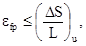
где hfp и efp - соответственно деформация пучения и относительная деформация грунта основания с учетом давления под подошвой фундамента;
Su, 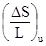
4.2. Расчет деформаций пучения грунтов основания, а также глубины заложения фундамента производится в следующей последовательности:
а) на основе материалов изысканий и данных табл. 1 определяется степень пучинистости грунта основания и в зависимости от нее выбирается тип и конструкция фундамента;
б) предварительно задаются размеры подошвы фундамента, глубина его заложения, толщина подушки из непучинистого материала;
Таблица 2
Предельные деформации основания
|
Предельные деформации пучения Su, см |
Предельные
относительные деформации пучения 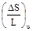 |
||
|
относительный прогиб или выгиб |
относительная разность деформаций пучения |
||
|
Бескаркасные здания с несущими стенами из: |
|||
|
панелей |
2,5 |
0,00035 |
- |
|
блоков и кирпичной кладки без армирования |
2,5 |
0,0005* |
- |
|
блоков и кирпичной кладки с армированием или железобетонными поясами при наличии сборно-монолитных монолитных ленточных или столбчатых фундаментов со сборно-монолитными фундаментными балками |
3,5 |
0,0006* |
- |
|
Здания стоечно-балочной конструкции |
4,0 |
- |
0,005 |
|
Здания с деревянными конструкциями: |
|||
|
на ленточных фундаментах |
5 |
0,002 |
- |
|
на столбчатых фундаментах |
5 |
- |
0,006 |
|
Бескаркасные здания с несущими стенами при L/H £ 3 (L - длина большей стены, Н - высота стены) на ленточных и плитных фундаментах |
8 |
- |
0,005 (крен) |
______________
* Допускается принимать большие значения , если на основании расчета стены на прочность будет установлено, что напряжения в кладке не превышают расчетных сопротивлений кладки растяжению при изгибе.
в) производится поверка условия, согласно которому среднее давление под подошвой фундамента не должно превышать расчетного сопротивления материала подушки, а давление на глубине, равной толщине подушки, - расчетного сопротивления грунта; расчет выполняется в соответствии с главой СНиП 2.02.01-83;
г) производится проверка фундамента по устойчивости на воздействие касательных сил пучения; расчет выполняется по методике, изложенной в главе СНиП II-18-76, нормативные удельные касательные силы пучения принимаются равными: для слабопучинистых грунтов 7 тс/м2, для среднепучинистых грунтов 9 тс/м2, для сильно- и чрезмерно пучинистых грунтов 11 тс/м2;
д) определяется деформация пучения ненагруженного основания;
е) определяются температурный режим и динамика сезонного промерзания грунтов основания, на основе которых рассчитывается давление морозного пучения на подошву фундамента;
ж) производится расчет основания фундамента по деформациям пучения грунта.
4.3. Деформация пучения ненагруженного основания hfi определяется по одной из формул, приведенных в табл. 3, на основе предварительно заданных глубины заложения фундамента d и толщины подушки hп.
Входящая в эти формулы деформация пучения ненагруженной поверхности грунта hf определяется в соответствии с приложением 2. Расчетная глубина промерзания грунта df определяется в соответствии с главой СНиП 2.02.01-83.
4.4. Давление на подошву фундамента (Pr, тс/м2) от нормальных сил пучения определяются по формулам для столбчатого фундамента с круглой формой подошвы
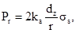
для столбчатого фундамента с квадратной формой подошвы
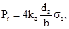
для столбчатого фундамента с прямоугольной формой подошвы
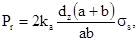
для ленточного фундамента
где dz - мощность слоя пучащегося грунта, вызывающего ниже подошвы фундамента деформацию hfi (см. п. 4.4); для первой схемы расчета dz = 0,75df - d - hп, для остальных двух схем dz = df - d - hп;
ka - коэффициент условий работы промерзающего грунта основания под фундаментом, определяемый из графиков (рис. 3) в зависимости от величины dz и площади подошвы фундамента Аf при Аf > 1 м2; коэффициент условий работы принимается равным ka при Аf = 1 м2; для ленточного фундамента Af принимается на единицу его длины;
r - радиус подошвы столбчатого фундамента круглой формы, м;
b, a - соответственно ширина и длина подошвы столбчатого фундамента прямоугольной формы;
b1 - ширина ленточного фундамента;
ss - сопротивление смещению мерзлого грунта относительно фундамента, тс/м2; определяется в соответствия с приложением 3.
Таблица 3
Схемы расчета деформаций пучения ненагруженного основания в зависимости от гидрогеологических условий и рельефа участка застройки
|
Условия увлажнения грунтов по виду рельефа |
Расстояние от поверхности грунта до уровня подземных вод dw, м |
Ориентировочное значение средней влажности в пределах сезоннопромерзающего слоя dfn |
Формулы для определения деформации пучения ненагруженного основания |
|
|
1. |
Сухие участки - возвышенности, всхолмленные места. Водораздельное плато. Грунты увлажняются только па счет атмосферных осадков |
dw > dfn + z |
а) W £ Wcr + 0,3Ip б) W > Wcr + 0,3Ip |
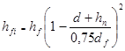 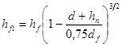 |
|
2. |
Сухие участки - слабо всхолмленные места, равнины, пологие склоны с затяжным уклоном котловины с признаками поверхностного заболачивания. Грунты увлажняются за счет атмосферных осадков и верховодки, частично подземных вод |
dw < dfn + z |
W > Wcr + 0,3Ip |
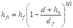 |
|
3. |
Мокрые участки - пониженные равнины, котловины, межсклоновые низины, заболоченные места. Грунты водонасыщаются за счет атмосферных осадков и подземных вод, включая верховодку |
dw ≤ dfn |
W > Wcr + 0,5Ip |
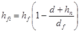 |
Примечание. Значение dw рассчитывается с учетом прогноза изменения уровня подземных вод; z - наименьшее расстояние, м, от границы промерзания dfn до уровня подземных вод, при котором эти воды не оказывают влияния на увлажнение промерзающего грунта; значение z определяется по табл. 4.
Таблица 4
Наименьшее расстояние от границы промерзания до уровня подземных вод
|
Значение z, м |
|
|
Глина с монтмориллонитовой и иллитовой основой |
3,5 |
|
Глины с каолинитовой основой |
2,5 |
|
Суглинки пылеватые с Iр > 0,13 |
2,5 |
|
Суглинки с Iр > 0,13 |
2,0 |
|
Суглинки пылеватые с Iр £ 0,13 |
2,0 |
|
Суглинки с Iр £ 0,13 |
1,8 |
|
Супеси пылеватые с Ip ³ 0,2 |
1,5 |
|
Супеси с Iр > 0,02 |
1,3 |
|
Супеси с Ip £ 0,02 |
1,0 |
|
Пески пылеватые |
1,0 |
|
Пески мелкие |
0,8 |
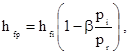
где рi - давление по подошве фундамента от внешней нагрузки, тс/м2;
pr - то же обозначение, что в п. 4.4;
b - коэффициент, учитывающий влияние подушки на работу фундамента; принимается по табл. 5.
где gп - коэффициент надежности, принимаемый равным 1,1;
w - коэффициент, зависящий от показателя гибкости конструкций здания l, определяется из графика (рис. 4); показатель l определяется в соответствии с приложением 4;
Dhfp - разность деформаций пучения (h1fp - h2fp), м, определяемая при экстремальных значениях расчетной предзимней влажности грунта на площадке строительства;
L - длина стены здания (отсека), м.
Рис. 3. Значения коэффициента ka
Рис. 4. Значение коэффициента w в зависимости от показателя гибкости конструкции здания l
Таблица 5
Значения коэффициента b
|
Значения коэффициента |
||
|
для ленточных фундаментов |
||
|
0,00 |
1,00 |
1,00 |
|
0,25 |
0,95 |
0,98 |
|
0,50 |
0,90 |
0,96 |
|
0,75 |
0,85 |
0,94 |
|
1,00 |
0,80 |
0,92 |
|
1,25 |
0,71 |
0,88 |
|
1,50 |
0,63 |
0,84 |
|
1,75 |
0,54 |
0,80 |
|
2,00 |
0,45 |
0,76 |
|
2,25 |
0,36 |
0,72 |
|
2,50 |
0,25 |
0,68 |
|
2,75 |
0,16 |
0,64 |
|
3,00 |
0,10 |
0,60 |
Примечание. Для промежуточных значений 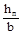
4.7. При показателе гибкости конструкций l > 3 относительная деформация пучения грунта основания определяется по формулам:
для ленточных фундаментов
для столбчатых фундаментов
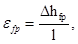
где Dhfp - то же обозначение, что в п. 4.6;
l - расстояние между соседними фундаментами.
Крен оснований зданий ограниченных
размеров в плане (при 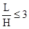
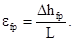
5.1. Изгибающие моменты М, тс∙м, и поперечные силы F, тс, возникающие в конструкциях здания при неравномерных деформациях пучения грунтов основания, определяются по формулам
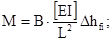
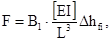
где B, B1 - коэффициенты, зависящие от l и определяемые по графикам (рис. 5, 6);
[EI] - приведенная жесткость на изгиб поперечного сечения конструкций здания в системе фундамент-цоколь-пояс усиления-стена, тс/м2, определяемая в соответствии с приложением 4;
Dhfi, L - те же обозначения, что в формуле (4.8).
Изгибающие моменты и поперечные силы, возникающие в ленточных (плитных) фундаментах зданий ограниченных размеров в плане (при ), определяются из расчета балок (плит) на упругом основании без учета жесткости надфундаментных конструкций.
5.2. Изгибающее моменты и поперечные силы в отдельных конструктивных элементах (фундамент, цоколь, стена, пояс) определяются по формулам
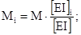
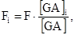
где [EI]i, [GA]i - соответственно изгибная и сдвиговая жесткость сечения рассматриваемого элемента;
G - модуль сдвига, тс/м2, принимаемый равным 0,4E.
Рис. 5. Значение коэффициента B
Рис. 6. Значения коэффициента B1
5.3. Силы Fr, возникающие в связях панельных стен, определяется по формуле
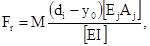
где di, yo, Ej, Aj - те же обозначения, что в формуле (13) приложения 4.
По найденным внутренним усилиям производится расчет на прочность конструктивных элементов зданий в соответствии с требованиями глав СНиП по проектированию каменных и армокаменных конструкций, бетонных и железобетонных конструкций.
6.1. На отведенной под строительство площадке в первую очередь необходимо выполнить комплекс работ по инженерной подготовке в следующем составе:
снятие дернорастительного или пахотного слоя в местах установки фундаментов, в увязке с общей планировкой застраиваемого участка;
выполнение предусмотренных проектом работ по отводу поверхностных вод.
6.2. Подготовка основания под мелкозаглубленный ленточный (столбчатый) фундамент состоит из отрывки траншеи (котлована), зачистки дна, устройства противопучинной подушки. При устройстве подушки непучинистый материал отсыпается слоями толщиной не более 20 см и уплотняется катками или площадочными вибраторами до rd = 1,6 т/м3.
6.3. Во избежание водонакопления и осыпки стенок траншей (котлованов) отрывку их следует производить после завоза фундаментных блоков и других строительных материалов, необходимых для устройства мелкозаглубленных фундаментов.
6.4. После укладки фундаментных блоков пазухи траншей (котлованов) должны быть засыпаны предусмотренным в проекте материалом (непучинистым или местным грунтом) с обязательным уплотнением.
6.5. После окончания работ по устройству фундаментов следует незамедлительно закончить вокруг здания планировку с обеспечением стока атмосферных вод от здания и устройством отмосток.
6.6. Не допускается оставлять мелкозаглубленные (незаглубленные) фундаменты незагруженными на зимний период. Если это условие по каким-либо обстоятельствам оказывается невыполнимым, вокруг фундаментов следует устраивать временно теплоизоляционные покрытия из опилок, шлака, керамзита, шлаковаты, соломы и других материалов, предохраняющих грунт от промерзания.
6.7. Запрещается устраивать мелкозаглубленные фундаменты на промерзшем основании. В зимнее время допускается устраивать такие фундаменты только при условии глубокого залегания грунтовых вод с предварительным оттаиванием мерзлого грунта и обязательной засыпкой пазух непучинистым материалом.
Определение расчетной предзимней влажности грунта
Расчетная предзимняя влажность в слое грунта толщиной, равной глубине нормативного промерзания dfn определяется по формуле
где Wп - средневзвешенное значение влажности в слое сезонно промерзающего грунта, доли един., полученное по результатам изысканий в летне-осенний период;
We - расчетное количество осадков, выпавших за период t, предшествующий моменту проведения изысканий и определяемый по формуле (2);
W0 - расчетное количество осадков, выпавших в предзимний (до установления среднемесячной отрицательной температуры воздуха) период, равный по продолжительности te.
Значения We и W0 определяются по данным «Справочника по климату» или по среднемноголетним данным наблюдений гидрометеорологической станции, находящейся в аналогичных условиях с районом строительства. Продолжительность периода te, сутки, определяется отношением
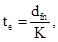
где K - коэффициент фильтрации, м/сутки.
Расчет деформации пучения ненагруженной поверхности грунта
1. Деформация пучения ненагруженной поверхности пылевато-глинистого грунта при его промерзании до расчетной глубины df в зависимости от расчетной предзимней влажности W определяется по формулам
при W > Wpr
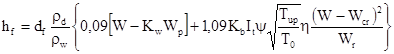
при W £ Wpr
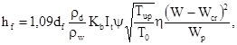
где Wpr - влажность предела пучения грунта, определяемая по формуле
в которой
0,92, rw, rs, rd - плотность, т/м3, соответственно льда, воды, твердых частиц и сухого грунта;
Kw - коэффициент содержания незамерзшей воды в мерзлом грунте при температуре, равной 0,5Тup;
Тup - минимальная температура грунта, пря которой прекращается его пучение; Tup, Kw определяются по таблице настоящего приложения;
T0 - расчетная температура оголенной от снега поверхности грунта (°С); принимается равной средней температуре воздуха за зимний период;
Wp, Wcr - те же обозначения, что в п. 2.1;
Kb - параметр, выражающий отношение коэффициентов влагопроводности, равный
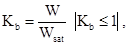
где Wsat - полная влагоемкость грунта;
It - температурный коэффициент, равный
где y - параметр, характеризующий зону одновременного пучения, определяется по номограммам (рис. 1, 2);
h - параметр, выражающий связь между температурой и содержанием незамерзшей воды в зоне промерзания, определяется по таблице настоящего приложения.
2. Деформация пучения ненагруженной поверхности песчаного грунта определяется по формуле
hf = fidf, (6)
где fi - интенсивность пучения, принимаемая равной:
fi = 0,035 для слабопучинистого песчаного грунта;
fi = 0,07 для среднепучинистого песчаного грунта.
Таблица
Значения параметров h, Kw, и температуры прекращения пучения Tup различных видов глинистого грунта
|
Наименование вида грунта |
Число пластичности грунта Ip |
Температура прекращения пучения Tup |
Значение параметра h |
Значение коэффициента Kw при расчетной температуре грунта T0, °C |
||||||||
|
-0,3 |
-0,5 |
-1 |
-2 |
-3 |
-4 |
-6 |
-8 |
-10 |
||||
|
Супесь |
0,02 < Ip £ 0,07 |
-1,5 |
3,55 |
0,6 |
0,5 |
0,4 |
0,35 |
0,33 |
0,3 |
0,28 |
0,26 |
0,25 |
|
Супесь пылеватая |
||||||||||||
|
Суглинок |
||||||||||||
|
Суглинок |
0,07 < Ip £ 0,13 |
-2,0 |
4,25 |
0,7 |
0,65 |
0,6 |
0,5 |
0,48 |
0,45 |
0,43 |
0,41 |
0,4 |
|
пылеватый |
-2,5 |
5,0 |
||||||||||
|
Суглинок |
0,13 < Ip £ 0,17 |
-2,5 |
3,8 |
- |
0,75 |
0,65 |
0,55 |
0,53 |
0,5 |
0,48 |
0,46 |
0,45 |
|
Суглинок пылеватый |
-3 |
5,35 |
||||||||||
|
Глина |
Ip > 0,17 |
-4,0 |
2,5 |
- |
0,95 |
0,9 |
0,65 |
0,63 |
0,6 |
0,58 |
0,56 |
0,55 |
Примечание. Для промежуточных значений температуры коэффициент Kw принимается по интерполяции.
Рис. 1. Значение параметра y для суглинков
Рис. 2. Значение параметра y для пылевато-глинистых грунтов
Определение сопротивления смещению мерзлого грунта относительно фундамента
1. Сопротивление смещенного мерзлого грунта относительно фундамента определяется по таблице настоящего приложения в зависимости от скорости пучения vt и расчетной температуры промерзающего грунта Td под фундаментом.
2. Скорость пучения грунта vt, м/сутки, определяется из выражения
где hfi - деформация пучения ненагруженного основания, определяемая в соответствии с п. 4.3;
td - продолжительность периода, в месяцах, промерзания грунта под фундаментом
Здесь t0 - продолжительность периода с отрицательными температурами воздуха, в месяцах, определяемая в соответствии с главой СНиП 2.01.01-82.
d, hп, df - те же обозначения, что в п. 4.3.
3. Расчетная температура грунта под фундаментом определяется по формуле
при
где Tmin - средняя температура воздуха наиболее холодного месяца зимнего периода, °C, определяемая в соответствии с главой СНиП 2.01.01-82.
Таблица
Значения ss
|
Расчетная температура грунта под фундаментом Td, °C |
Средняя скорость пучения грунта vf×102 м/сутки, промерзающего под подошвой фундамента |
|||||||||||||||||||
|
0,02 |
0,04 |
0,06 |
0,08 |
0,1 |
0,12 |
0,14 |
0,16 |
0,18 |
0,2 |
0,25 |
0,3 |
0,35 |
0,4 |
0,45 |
0,5 |
0,55 |
0,6 |
0,65 |
0,7 |
|
|
-0,6 |
0,5 |
1,1 |
1,6 |
2,2 |
2,7 |
3,3 |
3,8 |
4,4 |
4,9 |
5,5 |
6,8 |
8,2 |
9,6 |
11,0 |
12,3 |
13,7 |
15,1 |
16,4 |
17,8 |
19,2 |
|
-0,8 |
0,6 |
1,2 |
1,8 |
2,4 |
3,0 |
3,6 |
4,2 |
4,8 |
5,4 |
6,0 |
6,6 |
9,1 |
10,6 |
12,1 |
13,6 |
15,2 |
16,7 |
18,2 |
19,7 |
21,2 |
|
-1 |
0,7 |
1,3 |
2,0 |
2,7 |
3,0 |
4,0 |
4,7 |
5,4 |
6,1 |
6,7 |
8,4 |
10,1 |
11,8 |
13,5 |
15,2 |
16,9 |
18,6 |
20,2 |
21,0 |
23,6 |
|
-1,2 |
0,75 |
1,5 |
2,2 |
3,0 |
3,8 |
4,5 |
5,2 |
6,0 |
6,7 |
7,5 |
9,4 |
11,2 |
13,1 |
15,0 |
16,9 |
18,8 |
20,6 |
22,5 |
34,4 |
26,2 |
|
-1,4 |
0,8 |
1,6 |
2,5 |
3,3 |
4,1 |
5,0 |
5,8 |
6,7 |
7,5 |
8,3 |
10,4 |
12,5 |
14,6 |
16,7 |
18,8 |
20,8 |
22,9 |
25,0 |
27,1 |
29,2 |
|
-1,6 |
0,9 |
1,8 |
2,8 |
3,7 |
4,6 |
5,6 |
6,5 |
7,4 |
8,3 |
9,3 |
11,6 |
13,9 |
16,2 |
18,5 |
20,8 |
23,2 |
25,4 |
27,8 |
30,1 |
32,4 |
|
-1,8 |
1,0 |
2,0 |
3,1 |
4,1 |
5,1 |
6,2 |
7,2 |
8,2 |
9,3 |
10,3 |
12,8 |
15,4 |
18,0 |
20,6 |
23,1 |
25,7 |
28,3 |
30,8 |
33,4 |
36,0 |
|
-2 |
1,1 |
2,3 |
3,4 |
4,6 |
5,7 |
6,9 |
8,0 |
9,1 |
10,3 |
11,4 |
14,3 |
17,1 |
20,0 |
22,8 |
25,7 |
28,6 |
31,4 |
34,2 |
37,1 |
40,0 |
|
-2,2 |
1,3 |
2,5 |
3,8 |
5,1 |
6,3 |
7,6 |
8,9 |
10,1 |
11,4 |
12,7 |
15,8 |
19,0 |
22,2 |
25,4 |
28,6 |
31,7 |
34,9 |
38,0 |
41,2 |
44,4 |
|
-2,4 |
1,4 |
2,8 |
4,2 |
5,6 |
7,0 |
8,5 |
9,8 |
11,3 |
12,7 |
14,1 |
17,6 |
21,1 |
24,7 |
28,2 |
31,7 |
35,2 |
38,8 |
42,3 |
45,8 |
49,3 |
|
-2,6 |
1,5 |
3,1 |
4,7 |
6,2 |
7,8 |
9,4 |
10,9 |
12,5 |
14,1 |
15,6 |
19,5 |
23,5 |
27,4 |
31,3 |
35,2 |
39,1 |
43,0 |
47,0 |
50,9 |
54,8 |
|
-2,8 |
1,7 |
3,5 |
5,2 |
6,9 |
8,7 |
10,4 |
12,1 |
13,9 |
15,6 |
17,4 |
21,7 |
26,0 |
30,4 |
34,8 |
39,1 |
43,5 |
47,8 |
52,1 |
56,5 |
60,8 |
|
-3 |
1,9 |
3,8 |
5,8 |
7,7 |
9,6 |
11,6 |
13,5 |
15,4 |
17,4 |
19,3 |
24,1 |
28,9 |
33,8 |
38,6 |
43,4 |
48,3 |
53,1 |
57,9 |
62,8 |
67,6 |
|
-3,2 |
2,1 |
4,2 |
6,4 |
8,6 |
10,7 |
12,9 |
15,0 |
17,2 |
19,3 |
21,5 |
26,8 |
32,2 |
37,6 |
42,9 |
48,3 |
53,7 |
59,0 |
64,4 |
69,8 |
75,1 |
|
-3,4 |
2,4 |
4,7 |
7,2 |
9,5 |
11,9 |
14,3 |
16,7 |
19,1 |
21,5 |
23,8 |
29,8 |
35,8 |
41,7 |
47,7 |
53,6 |
59,6 |
65,6 |
71,5 |
77,5 |
83,4 |
|
-3,6 |
2,6 |
5,3 |
7,9 |
10,6 |
13,2 |
15,9 |
18,5 |
21,2 |
23,8 |
22,5 |
33,1 |
39,7 |
46,3 |
53,0 |
59,6 |
66,2 |
72,8 |
79,4 |
86,1 |
92,7 |
|
-4 |
3,3 |
6,5 |
9,8 |
13,1 |
16,3 |
19,6 |
22,9 |
26,1 |
29,4 |
32,7 |
40,8 |
49,0 |
57,2 |
65,3 |
73,5 |
81,7 |
89,8 |
98,0 |
106,2 |
114,3 |
|
-4,2 |
3,6 |
7,2 |
10,9 |
14,5 |
18,I |
21,8 |
25,4 |
29,0 |
32,7 |
36,3 |
45,4 |
54,4 |
63,5 |
72,6 |
81,6 |
90,7 |
99,8 |
108,8 |
117,9 |
127,0 |
|
-4,4 |
4,0 |
8,1 |
12,1 |
16,6 |
20,1 |
24,2 |
28,2 |
32,2 |
36,3 |
40,3 |
50,4 |
60,4 |
70,5 |
80,6 |
90,7 |
110,8 |
120,9 |
131,0 |
131,0 |
141,0 |
|
-4,6 |
4,5 |
9,0 |
13,4 |
17,9 |
22,4 |
26,9 |
31,3 |
35,8 |
40,3 |
44,8 |
55,9 |
67,1 |
78,3 |
89,5 |
100,7 |
111,9 |
123,1 |
134,3 |
145,5 |
156,7 |
|
-4,8 |
5,0 |
9,9 |
14,9 |
20,0 |
24,9 |
29,8 |
34,8 |
39,8 |
44,7 |
49,7 |
62,1 |
74,6 |
87,0 |
99,4 |
111,9 |
124,3 |
136,7 |
149,1 |
161,6 |
174,0 |
|
-5 |
5,5 |
11,0 |
16,6 |
22,1 |
27,6 |
33,1 |
38,7 |
44,2 |
49,7 |
55,2 |
69,0 |
82,8 |
96,6 |
100,4 |
121,2 |
138,0 |
151,9 |
165,7 |
170,5 |
193,3 |
|
-5,2 |
6,1 |
12,3 |
18,4 |
24,5 |
30,7 |
36,8 |
42,9 |
49,1 |
55,2 |
61,3 |
76,7 |
92,0 |
107,3 |
122,7 |
138,0 |
153,3 |
168,7 |
184,0 |
199,3 |
214,7 |
|
-5,4 |
6,8 |
13,6 |
20,4 |
27,2 |
34,1 |
40,9 |
47,7 |
54,5 |
61,3 |
68,1 |
85,2 |
102,2 |
119,7 |
136,2 |
153,3 |
170,3 |
187,3 |
204,4 |
221,4 |
238,4 |
|
-5,6 |
7,6 |
15,1 |
22,7 |
30,3 |
37,8 |
45,4 |
53,0 |
60,5 |
68,1 |
75,7 |
94,6 |
113,5 |
132,4 |
151,3 |
170,2 |
189,2 |
208,1 |
227,0 |
246,0 |
264,8 |
|
-5,8 |
8,4 |
16,8 |
25,2 |
33,6 |
42,0 |
50,4 |
58,8 |
67,2 |
75,6 |
84,0 |
106,1 |
126,1 |
147,1 |
168,1 |
189,1 |
210,1 |
231,1 |
252,1 |
273,1 |
294,1 |
|
-6 |
9,3 |
18,7 |
28,0 |
37,3 |
46,7 |
56,0 |
65,3 |
74,7 |
84,0 |
93,3 |
116,7 |
140,0 |
163,4 |
186,7 |
210,0 |
233,4 |
256,7 |
280,0 |
303,4 |
326,7 |
Примечание. Для промежуточных значений Td и vf значение ss принимается по интерполяции.
Расчет показателя гибкости конструкций здания
1. Показатель гибкости конструкций здания l определяется по формуле
где [EI] - приведенная жесткость на изгиб поперечного сечения конструкций здания в системе фундамент-цоколь-пояс усиления-стена, тс/м2, определяемая по формуле (4);
С - коэффициент жесткости основания при пучении грунта для оснований ленточных фундаментов;
L - длина стены здания (отсека), м;
для оснований столбчатых фундаментов
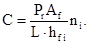
Здесь Pr, hfi, b1 - те же обозначения, что в пп. 4.4 - 4.5;
Af - площадь подошвы столбчатого фундамента, м2;
ni - число столбчатых фундаментов в пределах длины стены здания (отсека).
2. Приведенная жесткость на изгиб поперечного сечения конструкций здания в системе фундамент-цоколь-пояс усиления-стена, тс/м2, определяется по формуле
[EI] = [EI]f + [EI]z + [EI]p + [EI]s, (4)
где [EI]f, [EI]z, [EI]p, [EI]s - соответственно жесткость на изгиб фундамента, цоколя, пояса усиления, стены здания.
3. Жесткость на изгиб, тс/м2, фундамента, цоколя и пояса усиления определяется по формулам
[EI]f = gfEf(If + A0y02); (5)
[EI]z = gzEz(Iz + Azyz2); (6)
[EI]p = gpEp(Ip + Apyp2); (7)
где Ef, Ez, Ep - соответственно модули деформации тс/м2, материала фундамента, цоколя и пояса;
If, Iz, Ip - соответственно моменты инерции, м4, поперечного сечения фундамента, цоколя и пояса усиления относительно собственной главной центральной оси;
A0, Az, Ap - площади поперечного сечения, м2, фундамента, цоколя и пояса усиления;
y0, yz, yp - соответственно расстояния, м, от главной центральной оси поперечного сечения фундамента, цоколя и пояса усиления до условной центральной оси сечения всей системы;
gf, gz, gp - соответственно коэффициенты условий работы фундамента, цоколя и пояса усиления, принимаемые равными 0,25.
Жесткость на изгиб фундамента, состоящего из блоков, между собой, принимается равной нулю. Если цоколь является продолжением фундамента или обеспечена их совместная работа, цоколь и фундамент следует рассматривать как единый конструктивный элемент. При отсутствии поясов усиления [EI]p = 0. При наличии нескольких поясов усиления жесткость на изгиб каждого из них определяется по формуле (7).
4. Жесткость на изгиб, тс/м2, стен из кирпича, блоков, монолитного бетона (железобетона) определяется по формуле
[EI]s = gsEs(Is + Asys2), (8)
где Es - модуль деформации материала стены, тс/м2;
gs - коэффициент условий работы стены, принимаемый равным: 0,15 - для стен из кирпича, 0,2 - для стен из блоков, 0,25 - для стен из монолитного бетона;
Is - момент инерции поперечного сечения стены, м4, определяется по формуле (9);
Аs - площадь поперечного сечения стены, м2;
уs - расстояние, м, от главной центральной оси поперечного сечения стены до условной нейтральной оси сечения всей системы.
Момент инерции поперечного сечения стены определяется по формуле
где I1 и I2 - соответственно момент инерции сечения стены по проемам и по простенкам, м4.
Площадь поперечного сечения стены определяется по формуле
где bs - толщина стены, м.
Расстояние от центра тяжести приведенного поперечного сечения стены до ее нижней грани определяется по формуле
(11)
5. Расстояние от главной центральной оси поперечного сечения фундамента до условной нейтральной оси системы фундамент-цоколь-пояс усиления - стена определяется по формуле
где Ei, Ai - соответственно модуль деформации и площадь поперечного сечения i-го конструктивного элемента (цоколя, стены, пояса);
gi - коэффициент условий работы i-го конструктивного элемента;
yi - расстояние от главной центральной оси поперечного сечения i-го конструктивного элемента до главной центральной оси поперечного сечения фундамента.
6. Жесткость на изгиб, тс.м2, стен из панелей определяется по формуле
где Ej, Aj - соответственно модуль деформации, тс/м2, и площадь поперечного сечения, м2, j-той связи;
m - число связей между панелями;
dj - расстояние от j-той связи до главной центральной оси поперечного сечения фундамента, м;
y0 - расстояние от главной центральной оси поперечного сечения фундамента до условной нейтральной оси системы фундамент-стена здания, определяемое по формуле
(14)
в которой n - число конструктивных элементов в системе фундамент-стена.
Пример расчета мелкозаглубленного ленточного фундамента
1. ИСХОДНЫЕ ДАННЫЕ
1. Требуется запроектировать мелкозаглубленный фундамент одноэтажного здания с полами по цокольному перекрытию, возводимому вблизи г. Вологды.
Материалом стен является легкий бетон М75, имеющий модуль упругости Es = 6∙106 КПа (0,6×106 тс/м2). Длина наружных стен дома L1 = 12,6 м, L2 = 6,3 м; высота стен 3,38 м, наибольшая высота проемов h1 = 2,2 м, толщина стен bs = 0,4 м. Расчетная температура воздуха внутри помещения +5 °C.
2. Инженерно-геологические условия строительства.
Грунты площадки представлены покровными суглинками, которые в пределах нормативной глубины промерзания имеют следующие характеристики:
плотность сухого грунта rd = 1,64 т/м3;
плотность твердых частиц rs = 2,79 т/м3;
природная влажность грунта Wп1 = 0,295, Wп2 = 0,26 (неравномерное распределение по площадке изысканий);
влажность на границе текучести WL = 0,32;
влажность на границе раскатывания Wp = 0,208;
число пластичности Ip = 0,112;
полная влагоемкость грунта Wsat = 0,251;
коэффициент фильтрации K = 3×10-2 м/сут.
Уровень подземных вод залегает на глубине 3,0 м. Нормативная глубина промерзания dfn = 1,5 м.
2. ОЦЕНКА ПУЧИНИСТОСТИ ГРУНТОВ
Определим параметр Rf по формуле (2.1) настоящих норм:
где W - расчетная предзимняя влажность грунта в слое сезонного промерзания, определяется по формуле (1) приложения 1;
Wп - среднее значение природной влажности по глубине dfn в период изысканий в конце июля, равно Wп1 = 0,295, Wп2= 0,26;
Ωe, Ω0 - расчетное количество осадков, выпавших за период te, предшествующий моменту проведения изысканий, и за тот же период te до установления среднемесячной отрицательной температуры воздуха, соответственно
= 50 сут. = 1,7 мес.
Согласно данным «Справочника по климату», вып. 1 (Л., Гидрометеоиздат, 1968) среднемесячное количество осадков, выпадающих в летне-осенний период в районе г. Вологды (табл. la, станции 320, 321), составляет:
Месяц VI VII VIII IX Х
Количество осадков, мм 74 76 75 72 58
Расчетное количество осадков за период 1,7 месяца до начала промерзания грунта равно:
Расчетные экстремальные значения влажности при Wп1 и Wп2 равны:
Wcr = 0,21 (рис. 1 BCH)
(СНиП 2.01.01-82. Строительная климатология и геофизика).
с учетом исходной плотности сухого грунта rd = 1,64 т/м3;
Согласно табл. 1 настоящих норм площадка сложена среднепучинистыми грунтами. На основе полученного результата по п. 3.5 настоящих норм производится выбор конструктивного решения фундамента.
3. КОНСТРУКТИВНОЕ РЕШЕНИЕ
Принимаем сборно-монолитный фундамент из армированных блоков, уложенных на песчаную подушку.
Ширина блоков b1 = 0,4 м; высота h = 0,58 м; бетон тяжелый М100 с модулем упругости Ef = 17×106 кН/м2 (1,7×106 тс/м2). Погонная нагрузка на фундамент составляет qi = 28,4 кН/м (2,84 тс/м). Высота песчаной подушки 0,2 м. Глубина заложения фундамента 0,2 м от планировочной отметки. В соответствии с табл. 2 настоящих норм предельные деформации пучения равны: Su = 3,5 см,
4. РАСЧЕТ ЛЕНТОЧНОГО ФУНДАМЕНТА
1. Проверка устойчивости здания на действие касательных сил морозного пучения.
Приняв в соответствии с указаниями п. 4.22 значение нормативных касательных сил пучения 9 тс/м2 (90 кН/м2), произведем расчет устойчивости сооружения по СНиП II-18-76, приложение 5, учитывая действие касательных сил пучения на 1 м наружной стороны фундамента:
tthAfh £ N
N = 28,4×0,9 = 25,6 кН/м
tthAfh = 90×0,2×1,0 = 18 кН/м
18 < 25,6
Таким образом, условие устойчивости выполняется.
2. Расчет основания по деформациям пучения.
Определим величину пучения ненагруженной поверхности грунта ht (приложение 2) при глубине промерзания 1,5 м.
Определим параметры Tup, h, Kw(Tup), Wpr, Kb, y, It.
Согласно табл. 3 приложения 2:
Tup = -2 °C;
h = 4,25;
Kw(Tup) = 0,6.
Определим по формуле (3) приложения 2 Wpr:
По графику рис. 1 приложения 2 параметр y при влажности W1 и W2: y1 = 1,05, y2 = 1,14.
По формуле (5) приложения 2 определим параметр It:
принимаем It1 = 1.
При W1 > Wpr (0,25 > 0,241) величину hf1 определим по формуле (1) приложения 2:
При W2 < Wpr (0,22 < 0,241) величину hf2 определим по формуле (2) приложения 2;
3. Определим величину пучения hfi ненагруженного основания под фундаментом (табл. 3)
При dw < dfn + z (3,0 < 1,5 + 1,8) (z - определяется по таблице 4 ВСН) и при W > Wcr + 0,3Ip (0,25 > 0,21 + 0,033), расчет производим по второй расчетной схеме:
4. Определим величину пучения под подошвой фундамента с учетом давления по подошве фундамента от внешней нагрузки.
Давление пучения на подошву фундамента от нормальных сил пучения определим по формуле (4.6):
dz = df - d - hп = 1,5 - 0,2 - 0,2 = 1,1 м
Ka = 0,26 (рис. 3), Аf = l1b1 = 1×0,4 = 0,4 м2.
ss находим по приложению 3 настоящих норм. Для этого определяем продолжительность периода промерзания td и скорость пучения Vf по формулам (1) и (2) приложения 3:
Значения температуры у поверхности грунта Tп и под подошвой фундамента Td определим по формулам (3) и (4) приложения 3:
Так как |Tп| > |0,5Tmin|, примем Тп = 0,5Тmin = -5,9 °C
При Vf = 0,033 см/сут и Td = -4,3 °C по табл. приложения 3 определим ss = 63 КПа (6,3 тс/м2).
Деформацию пучения грунта основания с учетом давления под подошвой фундамента определим по формуле
В рассматриваемом случае давление под подошвой фундамента равно:
Величину b определяем по табл. 5 ВСН 29-85:
b = 0,965.
Тогда
5. Относительную неравномерность деформаций основания без учета жесткости конструкций здания для ленточного фундамента продольной стены длиной L1 = 12,6 м определим по формуле (4.9).
Из расчетов следует, что удовлетворяется только условие (4.1) настоящих норм.
6. Произведем расчет с учетом влияния жесткости фундамента и надземных конструкций на выравнивание неравномерных деформаций основания. Определим жесткость на изгиб системы фундамент - стена здания.
Момент инерции сечения участка стены над проемом относительно собственной главной центральной оси составит:
Расстояние между главной центральной осью сечения участка стены над проемом и главной центральной осью стены равно:
Момент инерции сечения участка стены над проемом относительно главной центральной оси всей стены составит:
I1 = I'1 + a2As1 = 0,055 + 1,12×0,4×1,18 = 0,626 м4.
Момент инерции участка стены по простенку относительно главной центральной оси стены составит:
Приведенный момент инерции сечения стены равен (формула (9) приложения 4 ВСН):
Приведенную площадь поперечного сечения стены рассчитаем по формуле (10) приложения 4.
Расстояние от главной центральной оси поперечного сечения фундамента до условной нейтральной оси системы фундамент - стена определим по формуле (12) приложения 4.
Жесткость на изгиб поперечного сечения фундамента и стены в соответствии с формулами (5), (8) приложения 4 составит:
[EI]f = gfEf(If + A0y02)
=
[EI]s = gsEs(Is + Asys2) = 0,2×6×106∙(0,84 + 1,18×0,722) = 1742050 кН∙м2 (174205 тс∙м2),
где
ys = y's - y0 = y + 0,5yf - y0 = 1,47 + 0,29 - 1,04 = 0,72 м.
Приведенная жесткость на изгиб системы фундамент - стена равна (формула (4) приложения 4):
[EI] = [EI]f + [EI]s = 1094100 + 1742050 = 284×104 кН∙м2 = (28,4×104 тс∙м2).
По формуле (1) приложения 4 определим показатель гибкости конструкций здания l, предварительно вычислив по формуле (2) коэффициент жесткости при пучении:
При l1 = 0,58 коэффициент w1, найденный по графику рис. 4, равен 0,034.
По формуле (4.8) настоящих норм определим efp:
Полученное значение (0,33×10-4 < 0,6×10-3).
Таким образом, расчетом установлено, что эксплуатационная надежность здания на морозоопасном основании обеспечивается.